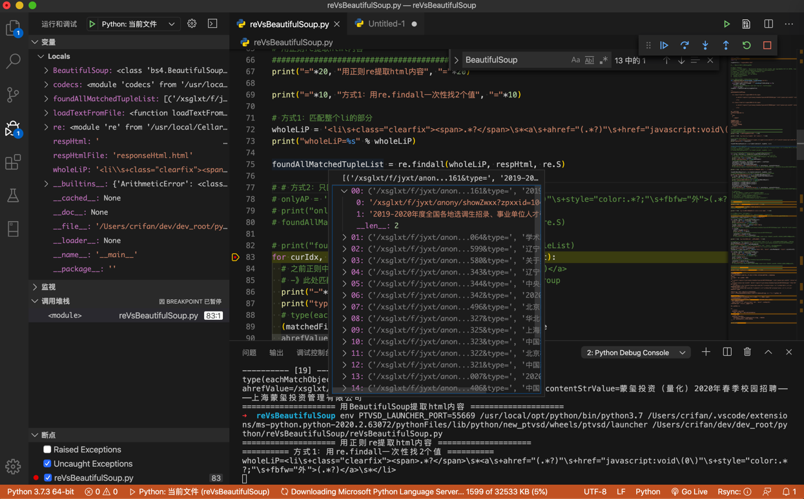
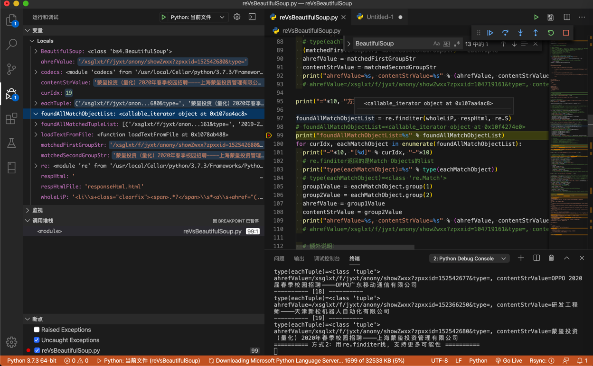
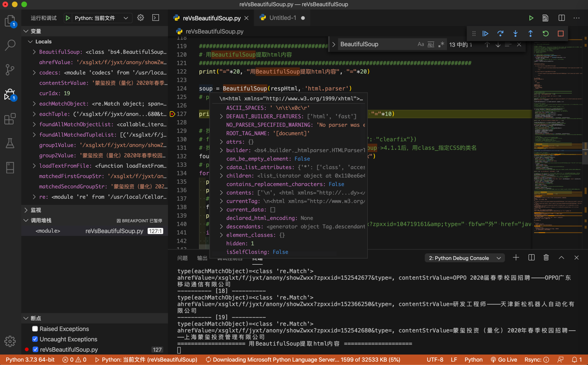
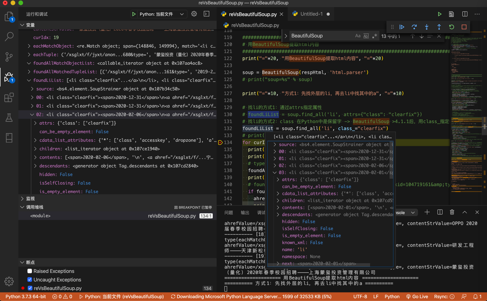
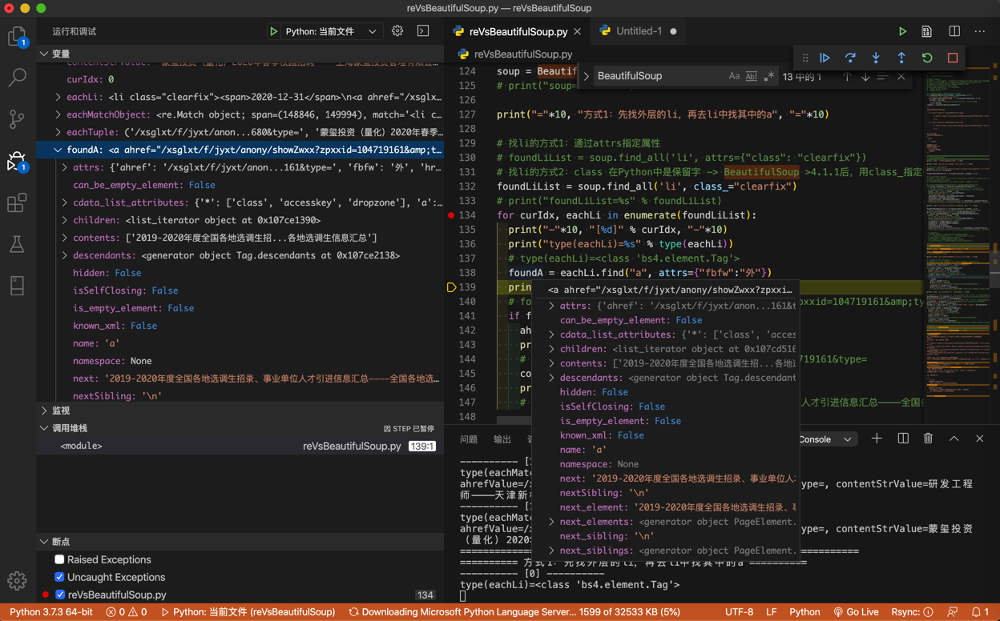

BeautifulSoup和re详细对比
下面就通过具体的例子，即：
以之前回复的这个帖子，来详细解释：
- 如何从HTML中提取所需内容
- BeautifulSoup的写法
find的用法find_all的用法
- re正则的写法
re.findall的用法re.finditer的用法
- BeautifulSoup的写法
详细代码如下：
# Function: 通过对比说明如何用BeautifulSoup和正则re去提取html中的内容
# 举例所用需求来自此帖：
# python正则表达式提取空列表-CSDN论坛
# https://bbs.csdn.net/topics/395845984
# 后已经整理至教程：
# 网页解析利器：BeautifulSoup
# http://book.crifan.com/books/html_parse_tool_beautifulsoup/website
# Author: Crifan Li
# Update: 20200216
import codecs
from bs4 import BeautifulSoup
import re
respHtmlFile = "responseHtml.html"
# 第一次：初始化，保存html到文件
import requests
headers = {'User-Agent': 'Mozilla/5.0 (Windows NT 10.0; Win64; x64) AppleWebKit/537.36 (KHTML, like Gecko) Chrome/80.0.3987.106 Safari/537.36'}
url = 'http://career.cic.tsinghua.edu.cn/xsglxt/f/jyxt/anony/xxfb'
respHtml = requests.get(url, headers=headers).text
# save html to file for later debug
with open(respHtmlFile, "w") as htmlFp:
htmlFp.write(respHtml)
htmlFp.close()
# # 后续调试：从文件中读取html代码，方便调试
# def loadTextFromFile(fullFilename, fileEncoding="utf-8"):
# """load file text content from file"""
# with codecs.open(fullFilename, 'r', encoding=fileEncoding) as fp:
# allText = fp.read()
# # logging.debug("Complete load text from %s", fullFilename)
# return allText
# respHtml = loadTextFromFile(respHtmlFile)
"""
【要处理的html的源码】
<li class="clearfix"><span>2020-12-31</span>
<a ahref="/xsglxt/f/jyxt/anony/showZwxx?zpxxid=104719161&type=" href="javascript:void(0)" style="color:#ff0000;" fbfw="外">2019-2020年度全国各地选调生招录、事业单位人才引进信息汇总————全国各地选调生信息汇总</a>
</li>
<li class="clearfix"><span>2020-12-31</span>
<a ahref="/xsglxt/f/jyxt/anony/showZwxx?zpxxid=41174064&type=" href="javascript:void(0)" style="color:#ff0000;" fbfw="外">学术就业相关资讯————清华大学学生职业发展指导中心</a>
</li>
...
【背景解释】
上述html元素结构是：
li
span
a
中文文字
【需求说明】
假如要提取的是：
每个li中a的：
ahref的链接地址
中文文字
"""
################################################################################
# 用正则re提取html内容
################################################################################
print("="*20, "用正则re提取html内容", "="*20)
print("="*10, "方式1：用re.findall一次性找2个值", "="*10)
# 方式1：匹配整个li的部分
wholeLiP = '<li\s+class="clearfix"><span>.*?</span>\s*<a\s+ahref="(.*?)"\s+href="javascript:void\(0\)"\s+style="color:.*?;"\s+fbfw="外">(.*?)</a>\s*</li>'
print("wholeLiP=%s" % wholeLiP)
foundAllMatchedTupleList = re.findall(wholeLiP, respHtml, re.S)
# # 方式2：只匹配a的部分
# onlyAP = '<a\s+ahref="(.*?)"\s+href="javascript:void\(0\)"\s+style="color:.*?;"\s+fbfw="外">(.*?)</a>'
# print("onlyAP=%s" % onlyAP)
# foundAllMatchedTupleList = re.findall(onlyAP, respHtml, re.S)
# print("foundAllMatchedTupleList=%s" % foundAllMatchedTupleList)
for curIdx, eachTuple in enumerate(foundAllMatchedTupleList):
# 之前正则中有2个括号，对应2个group组：ahref="(.*?)"，和 >(.*?)</a>
# -》此处匹配到的值是个tuple元素，是2个元素，分别对应着之前的2个group
print("-"*10, "[%d]" % curIdx, "-"*10)
print("type(eachTuple)=%s" % type(eachTuple))
# type(eachTuple)=<class 'tuple'>
(matchedFirstGroupStr, matchedSecondGroupStr) = eachTuple
ahrefValue = matchedFirstGroupStr
contentStrValue = matchedSecondGroupStr
print("ahrefValue=%s, contentStrValue=%s" % (ahrefValue, contentStrValue))
# ahrefValue=/xsglxt/f/jyxt/anony/showZwxx?zpxxid=104719161&type=, contentStrValue=2019-2020年度全国各地选调生招录、事业单位人才引进信息汇总————全国各地选调生信息汇总
print("="*10, "方式2：用re.finditer找，支持更多可能性", "="*10)
foundAllMatchObjectList = re.finditer(wholeLiP, respHtml, re.S)
# foundAllMatchObjectList=<callable_iterator object at 0x10f4274e0>
print("foundAllMatchObjectList=%s" % foundAllMatchObjectList)
for curIdx, eachMatchObject in enumerate(foundAllMatchObjectList):
print("-"*10, "[%d]" % curIdx, "-"*10)
# re.finditer返回的是Match Objects的list
print("type(eachMatchObject)=%s" % type(eachMatchObject))
# type(eachMatchObject)=<class 're.Match'>
group1Value = eachMatchObject.group(1)
group2Value = eachMatchObject.group(2)
ahrefValue = group1Value
contentStrValue = group2Value
print("ahrefValue=%s, contentStrValue=%s" % (ahrefValue, contentStrValue))
# ahrefValue=/xsglxt/f/jyxt/anony/showZwxx?zpxxid=104719161&type=, contentStrValue=2019-2020年度全国各地选调生招录、事业单位人才引进信息汇总————全国各地选调生信息汇总
# 额外说明：
# 如果你前面正则中是named group带命名的组，比如：
# ... ahref="(?P<ahref>.*?)" ... >(?P<contentStr>.*?)</a>
# 那么也可以通过group name组名去获取值：
# ahrefValue = eachMatchObject.group("ahref")
# contentStrValue = eachMatchObject.group("contentStr")
################################################################################
# 用BeautifulSoup提取html内容
################################################################################
print("="*20, "用BeautifulSoup提取html内容", "="*20)
soup = BeautifulSoup(respHtml, 'html.parser')
# print("soup=%s" % soup)
print("="*10, "方式1：先找外层的li，再去li中找其中的a", "="*10)
# 找li的方式1：通过attrs指定属性
# foundLiList = soup.find_all('li', attrs={"class": "clearfix"})
# 找li的方式2：class 在Python中是保留字 -> BeautifulSoup >4.1.1后，用class_指定CSS的类名
foundLiList = soup.find_all('li', class_="clearfix")
# print("foundLiList=%s" % foundLiList)
for curIdx, eachLi in enumerate(foundLiList):
print("-"*10, "[%d]" % curIdx, "-"*10)
print("type(eachLi)=%s" % type(eachLi))
# type(eachLi)=<class 'bs4.element.Tag'>
foundA = eachLi.find("a", attrs={"fbfw":"外"})
print("foundA=%s" % foundA)
# foundA=<a ahref="/xsglxt/f/jyxt/anony/showZwxx?zpxxid=104719161&type=" fbfw="外" href="javascript:void(0)" style="color:#ff0000;">2019-2020年度全国各地选调生招录、事业单位人才引进信息汇总————全国各地选调生信息汇总</a>
if foundA:
ahref = foundA["ahref"]
print("ahref=%s" % ahref)
# ahref=/xsglxt/f/jyxt/anony/showZwxx?zpxxid=104719161&type=
contentStr = foundA.string
print("contentStr=%s" % contentStr)
# contentStr=2019-2020年度全国各地选调生招录、事业单位人才引进信息汇总————全国各地选调生信息汇总
print("="*10, "方式2：直接找a，加上限定条件", "="*10)
# foundAList = soup.find_all('a', attrs={"fbfw":"外"}) # 只加上一个fbfw的限定条件，此处也是可以的
ahrefNonEmptyP = re.compile("\S+") # ahref="/xsglxt/f/jyxt/anony/showZwxx?zpxxid=104719161&type="
print("ahrefNonEmptyP=%s" % ahrefNonEmptyP)
# foundAList = soup.find_all('a', attrs={"fbfw":"外", "ahref": ahrefNonEmptyP})
styleColorP = re.compile("color:#[a-zA-Z0-9]+;") # style="color:#ff0000;"
print("styleColorP=%s" % styleColorP)
foundAList = soup.find_all('a', attrs={"fbfw":"外", "ahref": ahrefNonEmptyP, "style": styleColorP})
# print("foundAList=%s" % foundAList)
for curIdx, eachA in enumerate(foundAList):
print("-"*10, "[%d]" % curIdx, "-"*10)
print("type(eachA)=%s" % type(eachA))
# type(eachA)=<class 'bs4.element.Tag'>
ahref = eachA["ahref"]
print("ahref=%s" % ahref)
# ahref=/xsglxt/f/jyxt/anony/showZwxx?zpxxid=104719161&type=
contentStr = eachA.string
print("contentStr=%s" % contentStr)
# contentStr=2019-2020年度全国各地选调生招录、事业单位人才引进信息汇总————全国各地选调生信息汇总
################################################################################
# 对比：re vs BeautifulSoup
################################################################################
print("="*20, "对比：re vs BeautifulSoup", "="*20)
reVsBeautifulSoup = """
re正则的缺点：
万一html源代码改动了，即使改动很小，则之前已有的re正则表达式就失效了
举例：
只是a的属性的顺序变化一点点
从
<a ahref="/xsglxt/f/jyxt/anony/showZwxx?zpxxid=104719161&type=" href="javascript:void(0)" style="color:#ff0000;" fbfw="外">2019-2020年度全国各地选调生招录、事业单位人才引进信息汇总————全国各地选调生信息汇总</a>
改为：
<a href="javascript:void(0)" ahref="/xsglxt/f/jyxt/anony/showZwxx?zpxxid=104719161&type=" fbfw="外" style="color:#ff0000;">2019-2020年度全国各地选调生招录、事业单位人才引进信息汇总————全国各地选调生信息汇总</a>
之前正则：
'<a\s+ahref="(.*?)"\s+href="javascript:void\(0\)"\s+style="color:.*?;"\s+fbfw="外">(.*?)</a>'
就无效了，就要再去改为：
'<a\s+href="javascript:void\(0\)"\s+ahref="(.*?)"\s+fbfw="外"\s+style="color:.*?;">(.*?)</a>'
才可以匹配到。
更别说，万一html中代码有其他更大的变化
甚至是部分语法不规范的html代码，re正则根本就没法写，因为太复杂，复杂到写不出来
BeautifulSoup的优点：
与之相对：上述的，html代码的小改动，比如属性值出现的顺序不同
甚至大点的变化，多出其他属性值
甚至部分语法不规范的html代码，BeautifulSoup都可以很好的内部处理掉
而之前的代码，比如：
soup.find_all('a', attrs={"fbfw":"外", "ahref": nonEmptyP})
都可以很好的继续工作，而无需改动。
汇总起来就是：
re
性能：好
支持html程度：有限
仅限于不是很复杂的，比较规整的html
BeautifulSoup
性能：中等
支持html程度：很好
不仅支持复杂的html，还支持html内部元素和位置变化
对于不规范的html也有很好的支持
"""
print(reVsBeautifulSoup)
bs和re函数返回变量类型
此处调试期间，可以看到对应变量的类型：
- 正则re
re.findall返回的是匹配的元祖tuple的列表：<class 'tuple'>的list- 
re.finditer返回的是匹配对象Match Object的列表：<class 're.Match'>的list- 
- BeautifulSoup
BeautifulSoup返回的soup变量的详情：- 
- 而
BeautifulSoup的find_all返回的是标签元素的列表：<class 'bs4.element.Tag'>的list- 
- 而
BeautifulSoup的find返回的是单个标签元素：<class 'bs4.element.Tag'>- 
BeautifulSoup vs 正则re
最后总结各自的优缺点：
- re
- 性能：好
- 支持html程度：有限
- 仅限于不是很复杂的，比较规整的html
- 常用函数
re.searchre.findallre.finditer
- BeautifulSoup
- 性能：中等
- 支持html程度：很好
- 不仅支持复杂的html
- 还支持html网页源码内部元素和位置变化时，往往
bs的代码也无需改动
- 还支持html网页源码内部元素和位置变化时，往往
- 对于不规范的html也有很好的支持
- 不仅支持复杂的html
- 常用函数
soup.findsoup.findall